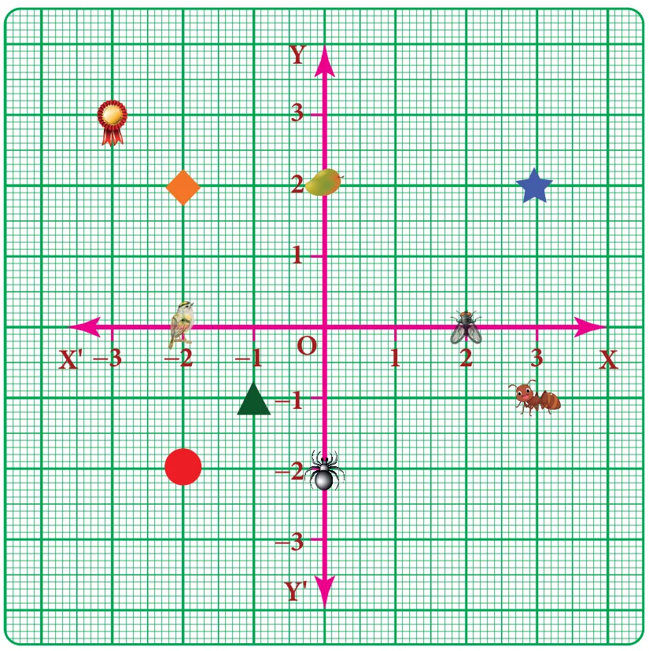

- Fill in the blanks:
- X- axis and Y-axis intersect at \(\underline{\qquad\qquad}\).
- The coordinates of the point in third quadrant are always \(\underline{\qquad\qquad}\).
- \((0,-5)\) point lies on \(\underline{\qquad\qquad}\) axis.
- The x- coordinate is always \(\underline{\qquad}\) on the y-axis.
- \(\underline{\qquad\qquad}\) coordinates are the same for a line parallel to Y-axis.
- Say True or False:
- \((-10,20)\) lies in the second quadrant.
- \((-9,0)\) lies on the \(x\)-axis.
- The coordinates of the origin are \((1,1)\).
- Find the quadrants without plotting the points on a graph sheet.
\((3,-4)\), \((5,7)\), \((2,0)\), \((-3,-5)\), \((4,-3)\), \((-7,2)\), \((-8,0)\), \((0,10)\), \((-9,50)\). - Plot the following points in a graph sheet.
A\((5,2)\), B\((-7,-3)\), C\((-2,4)\), D\((-1,-1)\), E\((0,-5)\), F\((2,0)\), G\((7,-4)\), H\((-4,0)\), I\((2,3)\), J\((8,-4)\), K\((0,7)\). - Use the graph to determine the coordinates where each figure is located.

- Star \(\underline{\qquad\qquad}\)
- Bird \(\underline{\qquad\qquad}\)
- Red Circle \(\underline{\qquad\qquad}\)
- Diamond \(\underline{\qquad\qquad}\)
- Triangle \(\underline{\qquad\qquad}\)
- Ant \(\underline{\qquad\qquad}\)
- Mango \(\underline{\qquad\qquad}\)
- Housefly \(\underline{\qquad\qquad}\)
- Medal \(\underline{\qquad\qquad}\)
- Spider \(\underline{\qquad\qquad}\)